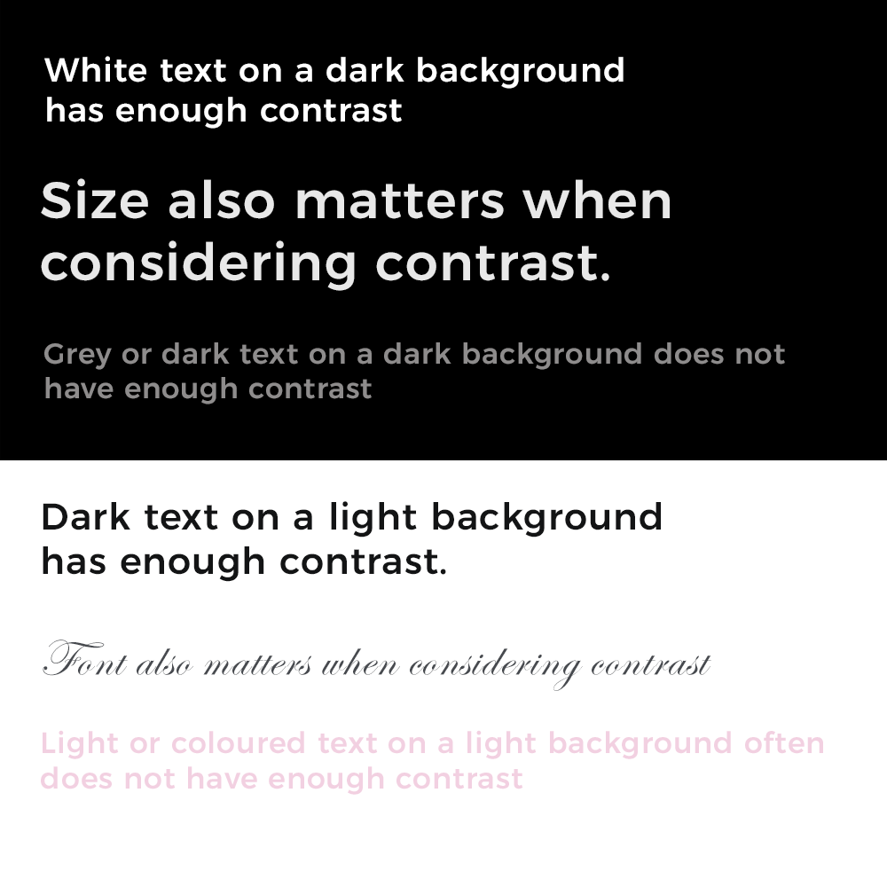

What is web accessibility and why is it important for your site?
Web accessibility refers to designing and developing websites in a way that provides alternative methods of use to accommodate users with diverse needs and levels of ability. This can include disabilities such as colour blindness or keyboard-only users, but also provides options for anyone using the site in varying situations. Designing alternative methods of use gives greater flexibility for everyone - closed captions on videos, tabbing through an online form, and getting accurate feedback on whether you entered errors when checking out of an online cart.
Think of the last time you filled out a frustrating form online. It probably wasn’t mobile-friendly, the labels didn’t make sense and it kept giving you errors. These are all examples of how an online experience goes sour when accessibility isn’t factored into the design.
Accessibility isn’t something to consider only in the development stage. While a lot of accessibility is reliant on the code of your site, you can actually create content and design your pages for accessibility right from the beginning. There are plenty of guidelines available for writing content that is understandable to the most people possible, using design elements that actually enhance your content rather than distract from it, and coding in accommodations that allow users to access different elements the way they need to.
The best thing you can do to create an accessible site is to work with experienced content, interaction and web designers who care about inclusive experiences. Knowing that isn't always possible, at least do a bit of research into accessibility and keep it in mind when creating your content.
If you’re creating a website on your own, or working with someone later on, here are some important things to consider when integrating accessibility into your site from the beginning. Please note that this is not a comprehensive guide, but a starting point to make you aware of the complexity of creating accessible content and the importance of working with experienced web and digital designers to create a great product that works for everyone.
Writing for accessibility
Photo by wocintechchat on Unsplash
Before you start even thinking about what your website will look like, you should start with the content that you will have. Writing your content with accessibility in mind will help keep your content clean, precise and pleasant to read. Writing for the web is more about getting people to the right places and sharing information clearly and quickly, rather than telling a detailed story.
Reading level
When writing for the web, one important factor to consider is the reading level of your text. People with cognitive disabilities, multiple languages or limited attention spans (which is everyone!) need quick and easy content to lead them to the right place. Keeping your content at a low reading level will help readers stay focused and actually take action. Whenever writing web copy, the Hemingway Editor is a great tool to keep writing clear and assess the reading level. A good practice for the web is to keep content at a Grade 8 level or lower.
Example:
Before - Post graduate reading level
If you take less than your entitled share of production for any month, but you pay royalties on the full volume of your entitled share in accordance with the provisions of this section, you will owe no additional royalty for that lease for prior periods when you later take more than your entitled share to balance your account. This also applies when the other participants pay you money to balance your account.
After - Grade 4 reading level
Suppose that one month you pay royalties on your full share of production but take less than your entitled share. In this case, you may balance your account in one of the following ways without having to pay more royalty. You may either:
Take more than your entitled share in the future; or
No matter which software you are using to write your content, you need to be aware of headings and formatting. When you put proper headings into your content it actually adds a tag to that section of text in the code that makes it easier to style later and scan through a page. Headers are key to giving sense to your content and identifying what each paragraph will be talking about. They not only make your content visually easier to read, but also allow screen-readers and other assistive technology to move through a webpage.
Headers are also great for breaking up your content into smaller, relevant chunks. This makes it easier for people to find what exactly they are looking for if they don’t have time or the attention span to read the entire page. This is also great for search engines that recommend your page based on heading titles and different formatting options. If you have a search bar on your website headings are important to help people find sections that they are asking about.
Hyperlinks with context
One of my biggest pet peeves as a content designer is seeing hyperlinks on a web page that say “Click here!” DO NOT DO THIS. You need to give context to your hyperlinks. Let your readers know where they are going when they click the link. Put this information right in the link text, not before or after the link. Users with screen-readers and audio devices need text to know what will happen when they access the link. Everyone wants to know why you are asking them to go somewhere else or download something. Don’t leave your users guessing, give them a good reason to divert their attention away from your words. Click here means nothing.
Using images and visuals bring a website alive and give it character, but it’s also important to use the imagery in a way that enhances the content rather than distracts from it. Visuals need to be strategic and provide value to both people who can see it and people who can’t. If you are using visuals to show the main point, make sure there are other formats to access the same content. Here are some necessary steps to take when incorporating visuals into your content.
Alternative text
If you are adding an image ANYWHERE on your site or post, add alternative text. There are some exceptions for purely decorative visuals, but to be on the safe side, add alternative text. Alternative text is a description of the image that will appear if the visual can’t load for whatever reason, or if your user is using a screen-reader. When writing the alternative text for an image, don’t include one word. Be descriptive about what information the image is providing.
Example:
This would be bad versus better alternative text for the following image.
Bad: No alt text or alt text = "Bottles"
Better: Alt text = "Three glass bottles with orange liquid on a white background."
Fortunately, we’ve been seeing more and more social media platforms also adding the option for alternative text on images. If you have the option, take it. As another bonus, Google and other search engines prefer to show images with clear descriptions.
Size, resolution and load times
When using visuals on your website, understand how they will affect the speed of your site. I’ve seen some websites that are breathtaking when they finally load on a big screen, but they stay completely blank when you try to load it on your phone. Especially with more and more people going mobile, and many people with still-limited internet speeds, keeping your website fast is essential.
Before exporting images and graphics to use on your website, make sure you know the sweet spot for keeping the quality while also keeping the file size low. This varies for each type of image but you can look it up to get some ideas of the ideal file size. If you aren’t sure, ask your photographer or graphic designer to give you a copy of the graphic that’s web-optimized.
Colour contrast
Did you know that 1 in 3 men have some form of colour blindness? This means that while that white text on blush pink looks pretty, it becomes hard to read for a lot of people. This becomes even more important when the text shrinks in size on smaller screens. Making sure the text has sufficient colour contrast to its background is important for people to actually be able to read it! Whenever you’re including images on your website, be careful when overlaying text on an image or coloured background. If you are using a big beautiful image as a banner or for an overlay, try to stick to images with simple, solid background colours so the contrast doesn’t get muddled throughout.
When using charts and graphs it's also important that each piece has enough contrast so you can tell the difference between them. While that pastel colour palette might look nice and follow your brand, it’s not usable by people who can’t tell the difference between each slice on your pie chart.
Colour contrast gets tricky and even if it LOOKS fine it often isn’t. Use an online contrast checker to see if your text actually will be easy to read on whatever colour is used behind it.
Examples:

Need to learn more? Reach out to credible accessibility experts and advocates
I could write a whole blog post about the technical side of accessibility and how to account for it in your code, but people much more knowledgeable and experienced than me have written extensively on the topic.
The best advice I could give is to work with a developer who is knowledgeable and cares about accessibility. Explicitly ask them about accessibility before you hire them. If they actually care, they should be able to tell you how they incorporate it in their design or at least have a clue what you’re talking about. Don’t be surprised if they haven’t heard much about accessibility, it is still a relatively new concept in web design, particularly in the private sector where it is not legislated. Do your own research, and reach out to professionals who have done theirs too.
If you’re working with a drag-and-drop style website builder, that’s fine. Most have considered accessibility in their designs and allow you to account for it in some ways if you know where to look. But hire a content designer or a web designer to at least do an accessibility review of your website before you publish it. The more I’ve learned about web design, the more I’ve noticed website builders are missing some key components of accessibility and only include elements that also help with Search Engine Optimization (SEO). This may completely stop users from being able to use your site, check out of your online store, or actually do what they need to do on your pages. Get someone to test your designs, it will save you A LOT of money in the long run.
And lastly, if you want a great website that’s well-designed, inclusive and optimized for search engines, you gotta work with professionals. Pay the people who know what they’re doing and it will make your website better for everyone, including you and your business.
Accessibility audits
Accessibility audits are a service I offer as part of my content strategy work. In addition to reviewing your website for clarity, usability and design, I also perform an audit on accessibility features. Send me an email if you would like to set up a holistic website audit for your business.
You audit will include a review of your content as well as technical requirements related to accessibility. Get in touch to set up a free consultation to go over the type of audit you may need, and the complexity of your digital materials. Prices for audits vary on the complexity and volume of your content.
If you are interested in learning about inclusivity more broadly, here’s a list of some great resources for accessible design:
Advocacy:
Spark Clarity: Clary Chambers is an accessibility, mental health and inclusivity advocate from Ottawa. Spark Clarity is her business that runs workshop series, keynote speaking engagements and other events to advocate for more inclusive practices.
REACH Canada: offers educational programs and independent legal referral services that address the rights and interests of persons with disabilities, fostering access to justice in the community.
Guidelines, research and legal:
WCAG 2.1 Guidelines: The main accessibility standards for web development. WCAG outlines the technical requirements for websites, apps and digital media to be fully accessible to varying levels of ability.
Inclusive Design Research Centre at OCAD university: An international community of open source developers, designers, researchers, educators and co-designers who work together to proactively ensure that emerging technology and practices are designed inclusively.
Axe accessibility testing: Browser extension that helps web developers and designers check websites and other digital media for accessibility requirements
WAVE accessibility tool: Browser extension that helps web developers and designers check websites and other digital media for accessibility requirements